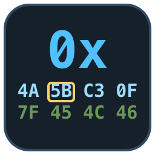
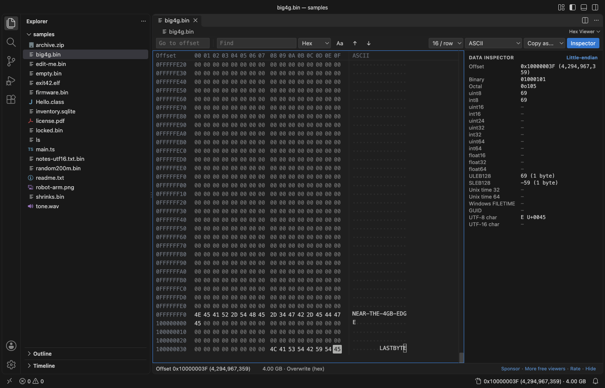
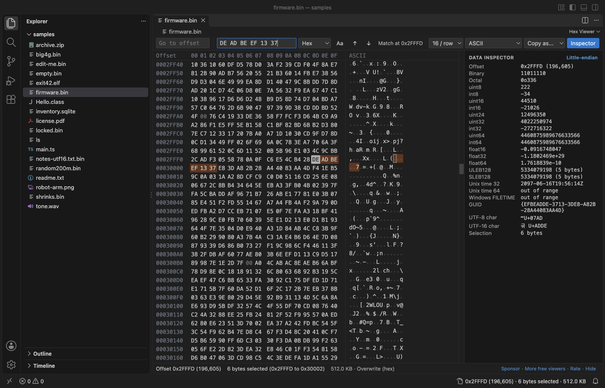
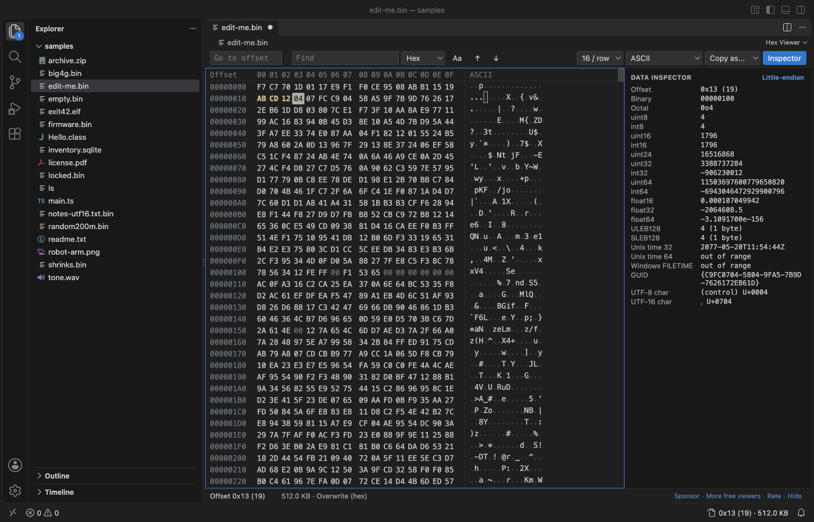
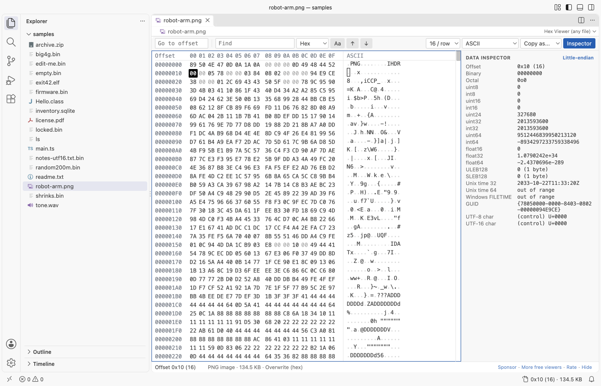

Hex Viewer & Binary Viewer, Hex Editor (Large Files)
Hex Viewer & Binary Viewer, Hex Editor (Large Files), a VS Code extension by Zovo
Hex viewer, binary viewer and hex editor for VS Code that opens files of any size (4 GB and more) in under a second. Go to offset, find hex or text, copy as C array, Python bytes or base64, a data inspector, and byte editing with undo. Free, no sign-in, works offline.
Free, MIT license. Needs VS Code 1.90.0 or newer. Extension ID zovo.zovo-hex-viewer, version 0.1.0.
Free, no sign-in, works offline. See and edit the bytes of any file in VS Code, from a 0-byte file to a 4 GB disk image, with go to offset, search, a data inspector and copy as hex, C array, Python bytes or base64.

Real output from VS Code 1.142 on macOS. The file is robot-arm.png. scripts/e2e-vscode.mjs installed the packaged extension in a clean VS Code profile, opened the file and saved the window through the debug port.
- Big files open at once. Only the rows on screen are read, in 64 KB pieces. In the release check a 4 GB file opened in 0.6 s, Ctrl+End went to its last byte, and the extension host used 127 MB.
- You can get anywhere. Go to an offset in hex or decimal, or jump by
+0x100or-16. Find hex bytes with??wildcards, text, or UTF-16 text. The status bar shows the offset of the cursor. - Editing stays put. Type two hex digits to overwrite a byte; the cursor moves one byte and stops. Each byte is one undo step. Save writes only the changed bytes.
Quick start
- Install Hex Viewer.
- Right-click any file in the Explorer and pick "Open in Hex Viewer". Files that end in
.bin,.dat,.img,.rom,.dmpor.dumpopen in Hex Viewer when you click them.
For a file that is already open, use "Open in Hex Viewer" in the editor title menu (...) or the tab's right-click menu, or "Reopen Editor With...". Text files such as .txt, .ts and Intel .hex files still open in the text editor. "Hex Viewer: Get Started" in the Command Palette opens a short tour.
Questions people ask
Is Hex Viewer & Binary Viewer, Hex Editor (Large Files) free?
Yes. Hex Viewer & Binary Viewer, Hex Editor (Large Files) is free and MIT licensed.
How do I install Hex Viewer & Binary Viewer, Hex Editor (Large Files)?
Click "Install in VS Code" above, or search for zovo.zovo-hex-viewer in the Extensions view.
Large files

- Local files of any size open. The extension never reads the whole file: it reads the rows you look at, and Find reads the file in 1 MB pieces.
- The scroll bar is drawn by the viewer, so it reaches the last row of a 4 GB or larger file. Drag it, use the mouse wheel, Page Up and Page Down, or Ctrl+Home and Ctrl+End.
- If the file changes on disk while it is open, the view shows the new bytes. If it got shorter, a message gives the old and new size and the view moves to the new end. Nothing crashes and nothing goes blank.
- Empty files and files you have no permission to read show a plain message instead of a blank tab.
- Files on remote and virtual file systems open up to 256 MB (setting
hexViewer.maxRemoteMB).
Find, go to and copy

| Action | Keys | Notes |
|---|---|---|
| Go to offset | Ctrl+G (Cmd+G) | 0x1F40, 1F40h, 8000, +0x100, -16, end, end-15. Also the box at the left of the toolbar, and a click on the status bar. |
| Find | Ctrl+F (Cmd+F) | Hex 50 4B 03 04 with ?? for any byte, text (with Aa to ignore case) or UTF-16. Unsaved edits are found too. |
| Next, previous match | Enter, Shift+Enter, F3, Shift+F3 | The search goes on from the start after the end. Esc stops a long search. |
| Copy | Ctrl+C (Cmd+C) | Hex with spaces from the hex column (setting hexViewer.copyFormat), text from the text column |
| Copy as... | toolbar | Hex, hex with spaces, C array, Python bytes, base64, UTF-8 text, Latin-1 text. Up to 32 MB. |
| Select | Shift + arrows, Page Up, Page Down, Home, End; drag; Ctrl+A | |
| Switch column | Tab | Between the hex and the text column |
Data inspector
The panel on the right reads the bytes at the cursor, or at the start of the selection, as:
- the offset in hex and decimal, binary and octal
- uint8, int8, uint16, int16, uint24, uint32, int32, uint64, int64
- float16, float32, float64
- ULEB128 and SLEB128, with their length
- Unix time (32 and 64-bit) and Windows FILETIME
- a GUID, and a UTF-8 and UTF-16 character with its code point
Click "Little-endian" to switch to big-endian. In the release check, the values at 5 offsets were the same as Python's struct and uuid modules.
Edit bytes

- Type hex digits in the hex column, or characters in the text column, to overwrite bytes. Edited bytes are colored until you save.
- Paste hex (
4A 5B 00,0x4A, 0x5Bor\x4a\x5b) with Ctrl+V to overwrite from the cursor. - Ctrl+Z undoes one byte, Ctrl+Shift+Z redoes, and Ctrl+S saves. Save writes only the changed bytes into the file, so it is fast on a 4 GB file. Save As writes a full copy.
- Overwrite only: bytes are not inserted or deleted, so the file size does not change.
- Read-only files open as view only. Set
hexViewer.readOnlyto turn editing off for every file.
Display

- 8, 16, 24, 32, 48 or 64 bytes per row.
- Text column in ASCII, Latin-1, UTF-8, UTF-16 LE, UTF-16 BE or EBCDIC (code page 037). Control bytes show as a dot or as symbols such as ␀ and ␊.
- The file type from its first bytes in the status line: PNG, JPEG, ZIP, PDF, SQLite, ELF, Mach-O, PE, Java class, WAV, WebAssembly and more.
- The editor font, the theme colors in dark and light themes, and the editor font size (or
hexViewer.fontSize). - Screen readers hear the offset and value of the byte under the cursor.
Settings
| Setting | Default | What it does |
|---|---|---|
hexViewer.bytesPerRow | 16 | Bytes in each row when a file opens |
hexViewer.encoding | ascii | Text column encoding when a file opens |
hexViewer.controlChars | dot | Show control bytes as a dot or as symbols |
hexViewer.uppercase | true | 4A or 4a |
hexViewer.fontSize | 0 | Font size of the byte grid; 0 uses the editor font size |
hexViewer.copyFormat | hexSpaced | What Ctrl+C copies from the hex column |
hexViewer.littleEndian | true | Byte order of the data inspector |
hexViewer.showInspector | true | Show the data inspector when a file opens |
hexViewer.readOnly | false | Turn off byte editing |
hexViewer.maxRemoteMB | 256 | Largest file from a remote or virtual file system |
hexViewer.askForRating | true | Ask one time for a Marketplace rating after a few days of use. Nothing is sent anywhere. |
hexViewer.showSupportLinks | true | Show the small Sponsor and More free viewers links in the status line |
Privacy and safety
The extension makes no network calls and has no telemetry. It writes to a file only when you save. The webview runs under a strict Content Security Policy (default-src 'none', scripts by nonce, no remote sources) and gets bytes only from the extension host.
Limits
- Overwrite only. Insert and delete come in a later version.
- No structure templates yet (PNG chunks, ZIP entries, ELF and PE headers).
- Copy as... works up to 32 MB, and a paste up to 16 MB.
License
MIT
Install Hex Viewer & Binary Viewer, Hex Editor (Large Files)
Click the button to open VS Code and install it, or press Ctrl+P (Cmd+P on macOS) in VS Code and run ext install zovo.zovo-hex-viewer.
Free, MIT license. Needs VS Code 1.90.0 or newer. Extension ID zovo.zovo-hex-viewer, version 0.1.0.
Source code and issues are on GitHub.
Support this work
If this extension saves you time, you can support the work on GitHub Sponsors. Monthly tiers start at $5, and one-time tiers start at $15. Sponsorship is optional, and the tool works the same without it.